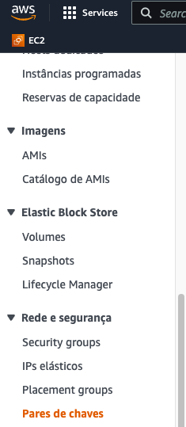
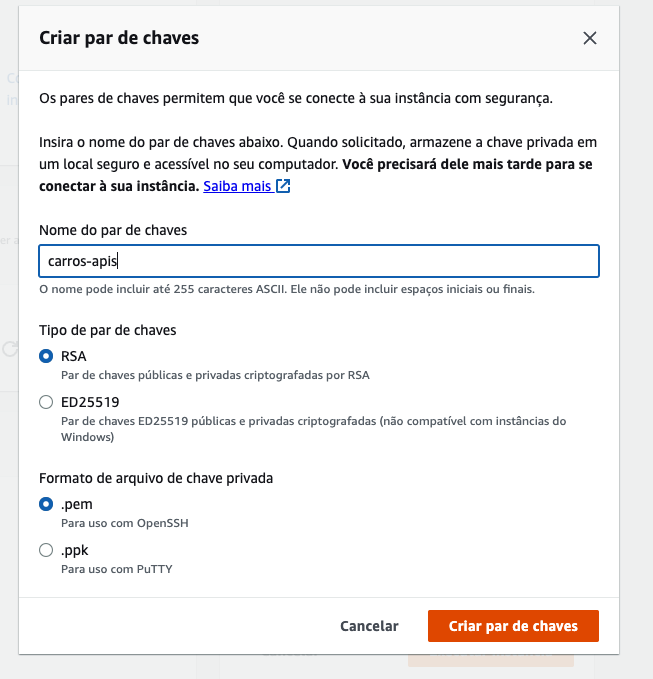
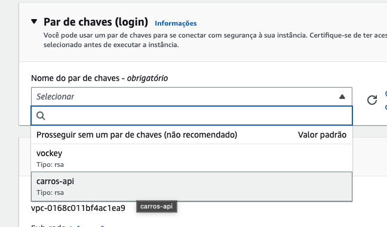

Carros API
Execute os passos abaixo para configuração da API
Criando novo par de chaves
Precisamos criar um novo par de chaves para essa instância pois iremos usa-la para o deploy Acesse o menu Rede e Segurança -> Pares de chaves
Informe o nome do par carros-api, Execute Criar par de chaves
O download do arquivo carros.pem será realizado
Criando a máquina
Nome: carros-api Máquina SO: Ubuntu Server 22.04 LTS amd64 Máquina Type: T2 Small Atenção na criação da imagem no menu Nome do par de chaves escolha carros-api

Instância
Logo em seguida aguarde a instância ficar disponível

Criar IP
Precisamos criar um IP Elástico (Externo)
Conforme a imagem abaixo clique no menu Rede e Segurança -> Ip´s Elasticos
clique em Alocar endereço IP elástico

Depois clique em Alocar

verifique o ip atribuido

Associar IP
Agora precisamos associar esse IP a instância da API

Escolha a instância carros-api na lista de Instâncias e clique em Associar

Regras de Segurança
Para acessar as regras de segurança acessse o menu Rede e Segurança -> Grupo
Então vá no menu Rede e Segurança -> e selecione o grupo de segurança designado para a instância da API
no menu Ações selecione Editar Regras de Entrada

Precisamos liberar as portas da API, por se tratar de apenas um exercício vamos liberar todas as portas, mas se atente em liberar em produção apenas as portas necessárias.
Então para isso Troque o valor da regra de entrada para aceitar todas as entradas conforme abaixo e clique em Salvar Regras

Acessando a instância
Selecione a instância carros-api clique em Conectar

Informe o usuário no campo como root depois clique em Conectar

Instações necessárias
#Instalar Docker
apt install apt-transport-https curl gnupg-agent ca-certificates software-properties-common -y
curl -fsSL https://download.docker.com/linux/ubuntu/gpg | sudo apt-key add -
add-apt-repository "deb [arch=amd64] https://download.docker.com/linux/ubuntu focal stable"
apt install docker-ce docker-ce-cli containerd.io -y
docker ps
usermod -aG docker ubuntu
exit
Para testar logue novamente na maquina com o usuário ubuntu e execute o comando docker ps